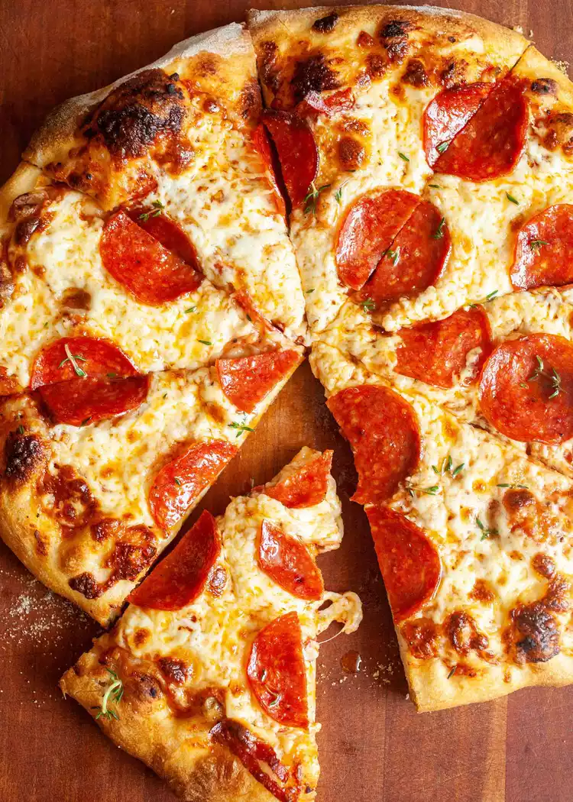

Pepperoni Pizza
Back to the kitchen

Description
Flavourful, juicy, and delicious. This homemade pizza will be the perfect dish for our main course.
Here we will show you exactly how to make it from scratch.
Ingredients
- 16 oz pizza dough (store-bought, or homemade)
- 1/2 cup pizza sauce (store-bought, or homemade)
- 18-20 slices beef pepperoni
- 12 oz grated mozzarella cheese
- 1/2 tsp ground black pepper
- flour for rolling and shaping dough
- Optional: 1 tsp fresh oregano
Steps
- Preheat oven to 500°F. If you are using a pizza stone, preheat it in the oven for at least 20 minutes so it is nice and hot as well.
- Roll out dough on a lightly floured surface. If it's hard to roll, let it rest for 5 minutes so it can come to room temperature. For a large pizza, I like to roll my dough into about a 14-inch diameter circle.
- Transfer the dough to a lightly dusted pizza peel. Alternatively, fit it into a large cast-iron. Add sauce in a light layer all over the pizza, leaving about 1/4-inch crust around the edges. Chop half of the pepperoni and sprinkle it over the sauce. Top the pizza with grated cheese and the rest of the pepperoni. Season with black pepper.
- If you're using a pizza stone, carefully slide pizza into the center of the preheated pizza stone. Cook for 6 minutes, then rotate the pizza halfway so it cooks evenly. Cook for another 6-8 minutes, or until the crust is golden brown and charred in spots. If you're using a skillet, press the dough into a cast iron skillet and add toppings. Place the skillet over a high heat burner for 2 minutes to get it preheated and get the crust cooking right away. Then transfer to a 500 ̊F oven and bake for 10 to 12 minutes, or until the crust is golden brown.
- Use pizza peel to slide pizza out onto a cutting board. Let the pizza rest for a minute and slice into pieces. Season with fresh oregano (optional). Serve while warm with a side salad.